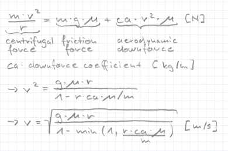
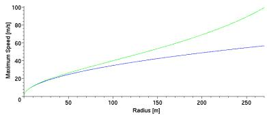

3.4 Advanced Utility FunctionsIntroductionHere we have a look on aerodynamic downforce of cars and increase the speed in the turns. Optionally you can slim down the interfaces of some methods. Speed Limit with Aerodynamics

In the "utility 1" section I showed you the equation for the speed limit in turns without
aerodynamics. We now add on the right side a term for the contribution of the aerodynamic
downforce. You can see that the value of this term rises proportional to the square of the
speed (look up the Bernoulli-equation in a physics book). The coefficient "ca" depends
on properties like the density of air, the area,
shape and angle of attack of the spoilers (also called wings) and the distance from the
car bottom to the track (called "ride height"). The spoilers work like wings from an
airplane which are mounted upside down. The effect between the cars bottom and the track is
called "ground effect" and produces also downforce. |
|
return sqrt(mu*G*segment->radius); to
return sqrt((mu*G*segment->radius)/(1.0 - MIN(1.0, segment->radius*CA*mu/mass))); Next we have to implement the computation of CA and the mass of the car. Downforce Coefficient CAHere I show you how to compute the coefficient CA. I won't explain the formulas, look up a book about fluid dynamics. Because CA includes just static properties, we need to compute it just once. Put this method into driver.cpp.
/* Compute aerodynamic downforce coefficient CA */
void Driver::initCa()
{
char *WheelSect[4] = {SECT_FRNTRGTWHEEL, SECT_FRNTLFTWHEEL,
SECT_REARRGTWHEEL, SECT_REARLFTWHEEL};
float rearwingarea = GfParmGetNum(car->_carHandle, SECT_REARWING,
PRM_WINGAREA, (char*) NULL, 0.0);
float rearwingangle = GfParmGetNum(car->_carHandle, SECT_REARWING,
PRM_WINGANGLE, (char*) NULL, 0.0);
float wingca = 1.23*rearwingarea*sin(rearwingangle);
First we declare an array with the wheel section names. These addresses sections in an XML file, where all car properties are specified. All the possible sections and properties are defined in car.h. Next we read two numeric properties from the XML file, the area of the rear wing and the angle of attack. Based on that and the density of air ([kg/m^3]) we compute the ca of the rear wing. You could also compute and add the contribution of the front wing.
float cl = GfParmGetNum(car->_carHandle, SECT_AERODYNAMICS,
PRM_FCL, (char*) NULL, 0.0) +
GfParmGetNum(car->_carHandle, SECT_AERODYNAMICS,
PRM_RCL, (char*) NULL, 0.0);
float h = 0.0;
int i;
for (i = 0; i < 4; i++)
h += GfParmGetNum(car->_carHandle, WheelSect[i],
PRM_RIDEHEIGHT, (char*) NULL, 0.20);
h*= 1.5; h = h*h; h = h*h; h = 2.0 * exp(-3.0*h);
CA = h*cl + 4.0*wingca;
}
Next we read the "ground effect" coefficients for the car front and rear. We sum them up in cl. Improvements are possible with considering front and rear separately and take into account just the minimum. In the for loop we compute the effect of the distance of the cars floor to the track (called "ride height"). Finally we compute CA and store it. For simplicity we assume that the ride height is constant (it's obviously not because of the springs). The numerical constants above appear just in this computation, so I don't assign nice names. MassThe total current mass of the car consists of the cars mass (constant) and the mass of the fuel. Because we burn fuel, the current car mass changes over time and can differ up to 10%. This is significant, so we need to update it from time to time. For simplicity we implement update in every timestep. In car->_fuel we find the remaining fuel (in [kg]), the car mass is specified in the XML file. Finishing ImplementationWe put the initialization of CA and the car mass into newRace(...), file driver.cpp:
this->car = car;
CARMASS = GfParmGetNum(car->_carHandle, SECT_CAR, PRM_MASS, NULL, 1000.0);
initCa();
You see that we store now the car pointer, so we don't need to pass it on successive calls. Now we add the mass update to update(...) in driver.cpp:
mass = CARMASS + car->_fuel;
Remove the car parameter from the following methods (in driver.cpp, driver.h) and fix all calls (in driver.cpp, bt.cpp).
drive(tCarElt* car, tSituation *s) -> drive(tSituation *s) pitCommand(tCarElt* car, tSituation *s) -> pitCommand(tSituation *s) isStuck(tCarElt* car) -> isStuck() update(tCarElt* car, tSituation *s) -> update(tSituation *s) getBrake(tCarElt* car) -> getBrake() getAccel(tCarElt* car) -> getAccel() getDistToSegEnd(tCarElt* car) -> getDistToSegEnd() getGear(tCarElt *car) -> getGear() endRace(tCarElt *car, tSituation *s) -> endRace(tSituation *s)
We have to define initCa() in driver.h:
void initCa();
and also the new variables:
float mass; /* mass of car + fuel */
tCarElt *car; /* pointer to tCarElt struct */
float CARMASS; /* mass of the car only */
float CA; /* aerodynamic downforce coefficient */
Lap TimesImplement the above stuff and do some test runs. Because we go more and more to the limit, our robot is suffering from the very bad steering function and path on the track. Just e-track-4 is completed well (from the tracks below) with a gain of ~14 seconds.
|
Comparison of the old and new Speed Limit To estimate what we can expect from the new getAllowedSpeed(...) method I present you this plot. It is for a cg-nascar-rwd with full fuel tank on the track wheel-1. The mass is 1250 [kg], mu is 1.2 [-], CA is 2.61 [kg/m] and G is 9,81 [m/(s*s)]. The green curve is the new speed for a given radius, the blue curve the old speed. One can see very nice that our new implementation has always an advantage and that there are significant improvments. Especially on wide turns we can drive up to ~130% of the previous speed. |
DownloadsIn case you got lost, you can download my robot for TORCS 1.2.0 or later. Summary
|
|
Back |
Brake harder! |